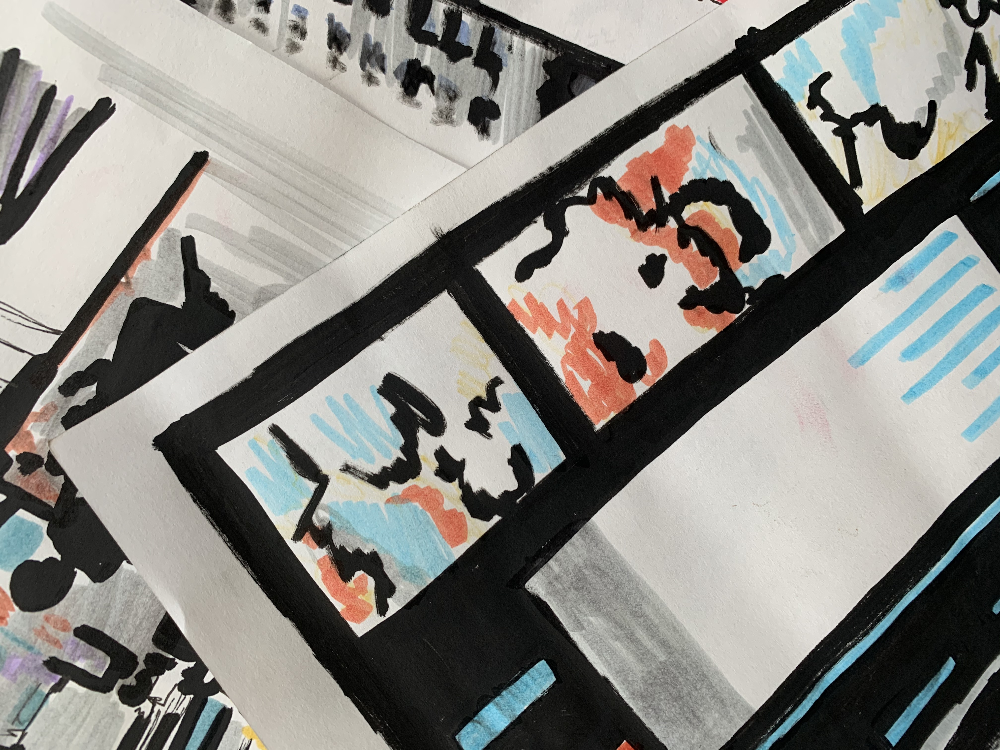

From Bystander to Activist

As South Korea confronts a crisis of sexual abuse, from widespread spycam crimes to the Nth room, citizens face a world of unjust realities. This piece tells the story of one such person and asks, “What does it mean to be a bystander?”
Writers: Sally Jee and Lauren Alcindor
Tech: Lauren Alcindor
Visuals: Katherine Bibilouri
Estimated reading time: 30 mins
enter